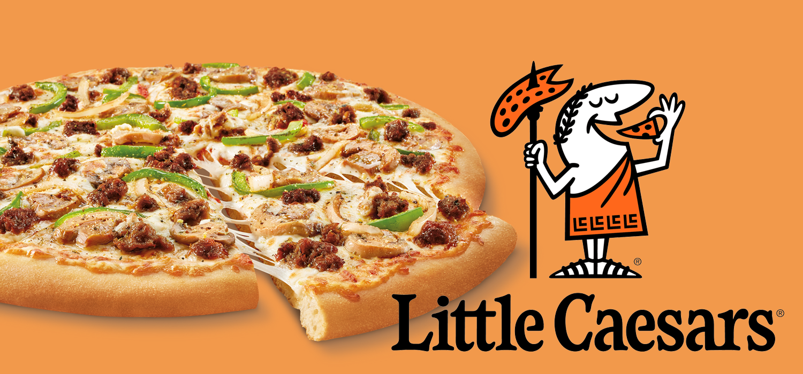

Pesto Pasta
Another one of my favorite foods is pesto pasta. The sauce looks green when you see it. People typically don't like this type of pasta, but I do!
One of my most favorite foods is pizza. Pizza is a common food that people love a lot.
An image below of pizza. Hover to see magic.
An article to learn about pizza
Another one of my favorite foods is pesto pasta. The sauce looks green when you see it. People typically don't like this type of pasta, but I do!